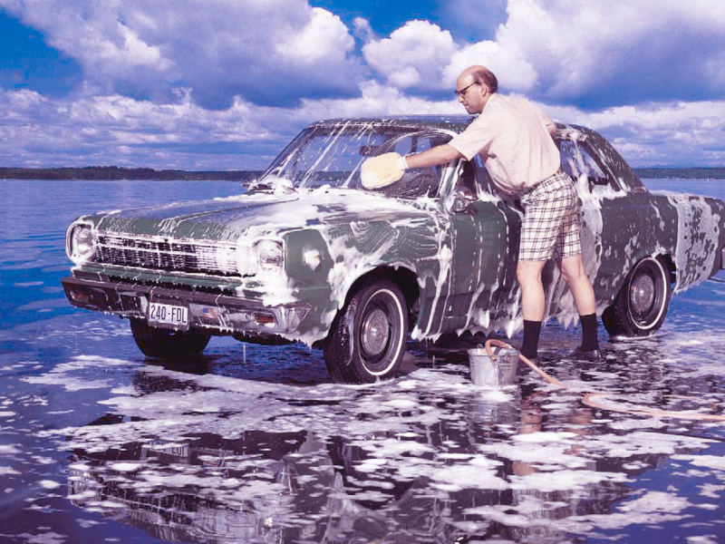

April 8, 2016
At the Car Wash

For many, car washing is a springtime ritual. But when cars are washed on streets and driveways, that dirty water with exhaust fumes, soaps and heavy metals eventually winds up in rivers, creeks, lakes and the ocean.
The best way to minimize the effect washing your car has on the environment is to use a commercial car wash. Most locations reuse wash water several times before sending it to a treatment plant. The average at home wash uses 116 gallons of water compared to 15 gallons at a self-serve carwash.
Here’s how to minimize the impact of your at home carwash on water quality:
- Minimize water usage. Use a spray gun with flow restriction to minimize water volume and runoff.
- Wash on an area that absorbs water, such as gravel, or grass. Avoid washing cars on concrete or asphalt pavement unless it drains into a vegetated area.
- When planning a car wash fundraiser, try developing a partnership with a commercial car wash facility, or use a safe location.
- Use biodegradable, phosphate-free, water- based cleaners only.
- Always empty wash buckets into sinks or toilets.
Or… best yet put those April showers to work. Put on your rain slicker and do some washing in the rain. And now watch where that raindrop or wastewater goes.